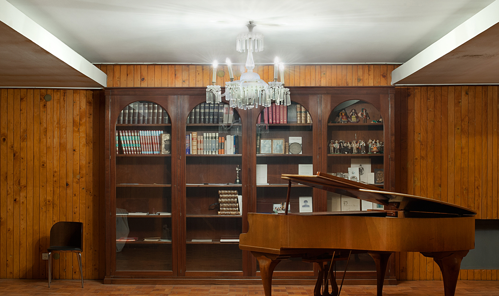
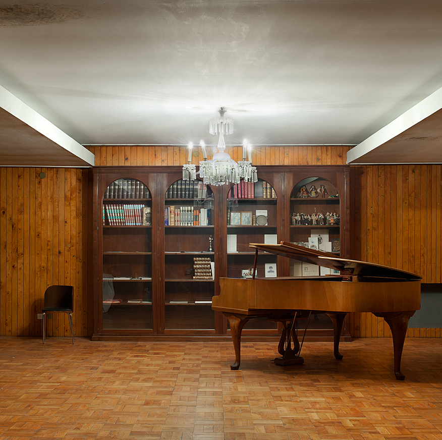
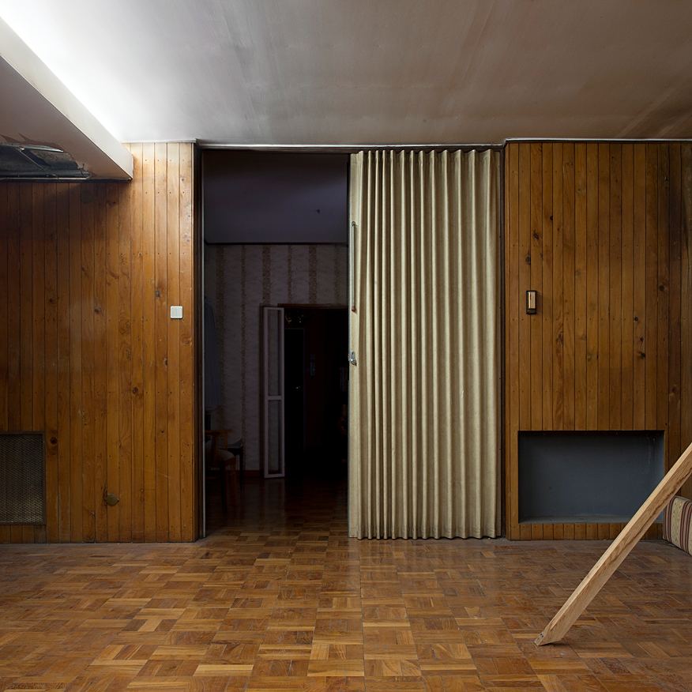
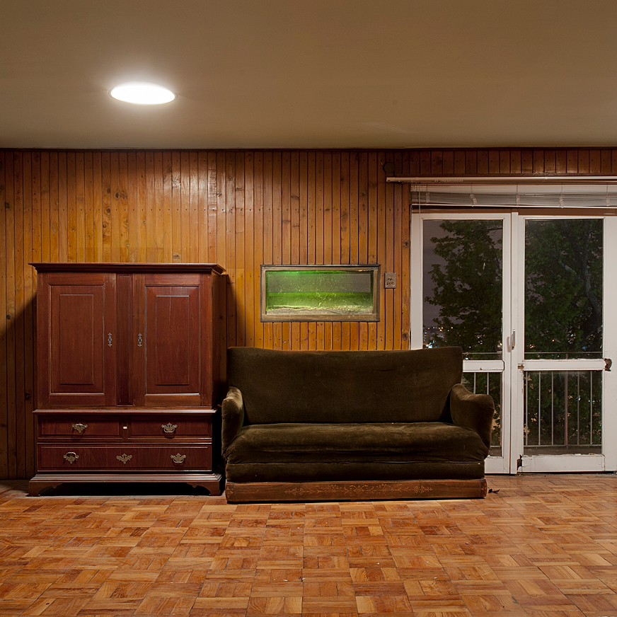
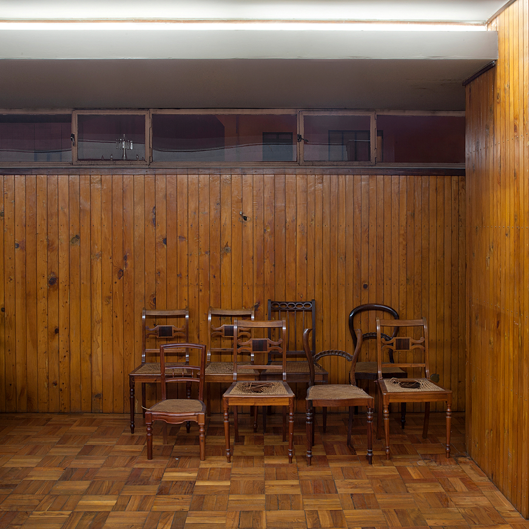

FESTIM is a publication comprising two sections with different purposes. The first is devoted entirely to theoretical essays on the themes addressed in the context of the exhibition and includes artistic projects developed specifically for the publication.
The second section is devoted solely to H ó S P E D E as an exhibition, explaining the project’s general objectives and the concepts it explores, and presenting the works produced as well as the artists featured in the exhibition.




Catarina Azevedo
Ana Tostões
Daniel Oliveira
Fernando Corrêa de Oliveira
Joana Mendes
Joana Resende
Lúcia Almeida Matos
Luciana Rocha
Luís Albuquerque Pinho
Luís Nunes
Luísa Especial
Mário Bismarck
Olga Sureda Guasch
Valdívia Tolentino
Jorge Garcia Pereira
Manuel Santos Maia
Nuno Cassola Marques
Carlos Azeredo Mesquita
Felix & Mumford
Francisco Babo
Dário Cannatà Diana Carvalho
Jonas Lewek
José Oliveira
Nikolas Sisic
Rita Medinas Faustino
Sarah Klimsch